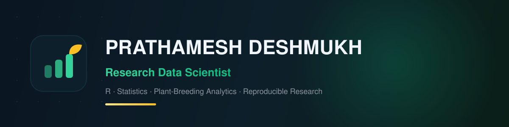

Research data scientist turning experimental field data into selection decisions — with R, statistics, and reproducible research.
About
From Pune, India. I work at the intersection of statistics, R, and plant-breeding analytics — taking experimental data from raw files to decisions stakeholders can act on.
Statistical analysis
EDA, ANOVA + post-hoc ranking, linear regression, clustering and PCA — applied end to end on real genotype data.
Reproducible research
Self-contained scripts, versioned data, clean output folders, MIT-licensed — so every result can be re-run.
Interactive delivery
R Shiny dashboards that let non-coders explore the data themselves — the #1 ask from field teams.
Skills
The toolset behind the projects below.
Portfolio
One pipeline — 100 plant genotypes from raw data to a stakeholder-ready dashboard — shipped as five reproducible modules.
Career focus
Estimated hiring probability over 90 days of targeted applications, from the 2026 job-market analysis (master's degree + R + research skills).
Next skills on the roadmap: mixed models & heritability (BLUP), Python + SQL, and a live-deployed Shiny app.